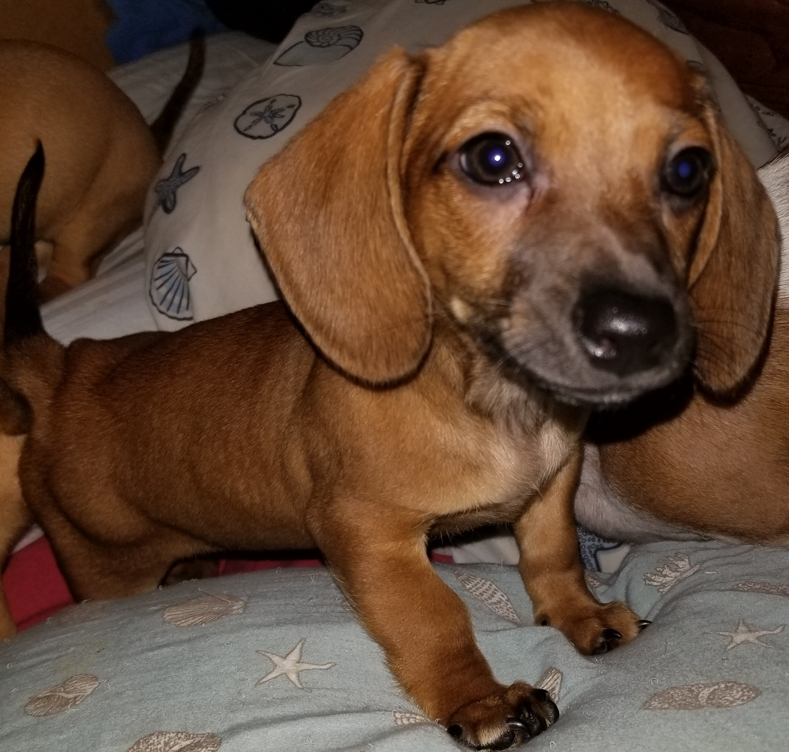

Meet the Pack of Dapper Dachshunds
1 / 3

Rory, Rudy and Scooter, likely begging for food.
2 / 3

Rudy and Rory snuggling.
3 / 3

Rory with her second and final litter of pups: Orangey, Blue, Greenie, Pinky and Violet (now Scarlet).
❮
❯

Rudy is the leader of the pack and father to both Scooter and Scarlet (and 4 other pups that have found their own furever families). Becoming my first dachshund, his "gotcha day" was on September 1, 2016 at approximately 12 weeks old. His actual birthday is June 15, 2016, and you better believe he won't let us forget it every year. He demands an entire birthday week.
Hobbies:
- Sleeping
- Playing with his squeaky hotdog
- Chasing the cats
- Tug-o-war

Rory was the second pup to join the pack in January 2017, although she graced the world with her presence on November 21st, 2016. Rudy was getting spoiled rotten as an only puppy and needed a playmate to put him in his place. Rory was the perfect pick to do just that. She lets Rudy believe he is king of the castle, but she always has the final bark. She is the mother to 6 of Rudy's pups (including Scooter and Scarlet), and her puppy-rearing days are over. Rory is usually about 8 lbs, but when she was pregnant with her final litter of 5, she weighed 15 lbs.
Hobbies:
- Sleeping
- Finding a warm place in the sun to nap
- Burrowing in blankets
- Eating treats
- Catching bugs

Scooter was the only puppy in his litter. The vet thought that as big as Rory was during her pregnancy and as long as the puppy's spinal cord was as seen in the xray, that she could have two pups. Nope. Just one giant puppy born on March 21, 2019. Scooter almost died when he was only a few months old. He ate something on the ground, most likely a pill, and he was poisoned with CNS damage symptoms. The emergency vet and his regular vet did not think he was going to make it, but he pulled through and was called a "miracle puppy". Now he is the biggest pup in the pack.
Hobbies:
- Playing with his hedgehog
- Cuddling
- Belly rubs
- Digging holes

Scarlet is the final member of the pack and lives up to her name as she really is a true joy. She was born with a "funky paw", as I like to call it. Her right front paw has two of her appendages fused together, forming a heart-shaped pad. This mutation is only cosmetic and causes her no functional deficits.
Hobbies:
- Chewing on bones and toys
- Eating hibiscus flowers
- Licking faces
- Wagging her tail